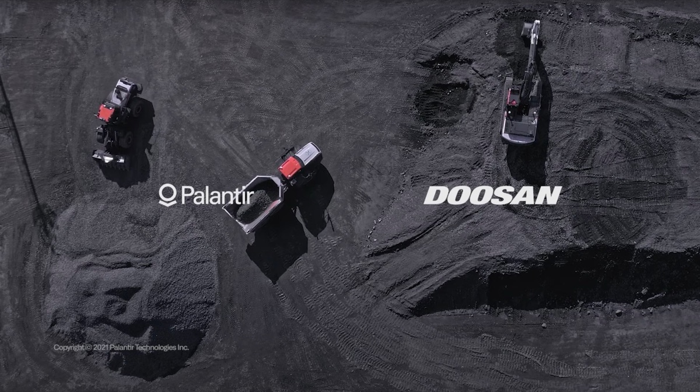

Automotive & Mobility
Mobility is on the cusp of total transformation.
Palantir and its customers are leading the charge.
About Our Work

Palantir Foundry, one of the world’s leading Automotive software applications, is powering the mobility revolution. Most of the top 10 OEMs globally, as well as over 30 major Automotive part suppliers, use our software to analyse and understand their data.
From design to assembly — through marketing, sales, and use on the road — every vehicle produces masses of data. Palantir Foundry presents an end-to-end solution for the automotive ecosystem.
It can integrate the full lifecycle of vehicle data into a collaborative environment for analysis. OEMs, suppliers, dealers, and other mobility players can unlock its value in weeks to accelerate growth, reduce costs, and shape the future of mobility.
Our Partners


Our Offerings
 Learn more
Learn moreFoundry’s Quality Management OS integrates relevant data from suppliers, dealers, diagnostic trouble codes, connected vehicle telematics, warranty claims, and more to provide a holistic view of quality — leading to faster issue identification and resolution.
 Learn more
Learn morePalantir’s Component Performance Monitor enables OEMs and suppliers to prepare and integrate their data effectively, so teams can focus on working together to find solutions for impending issues. A collaborative and data-driven workflow allows OEMs to resolve problems before they cause a large number of failures, recalls, and quality costs.
 Learn more
Learn moreManage unexpected shocks in the supply chain with a transparent digital twin of your global supply chain that proactively shows potential problems like plant shutdowns, production bottlenecks, and logistical delays. Apply complex “what-if” scenario analysis on this data asset to dynamically choose an optimal procurement and distribution strategy.

Foundry’s Plant Digital Twin enables manufacturing teams to optimize production with an integrated feedback loop, leading to decreased re-work, improved in-field performance, and quicker turnaround times for critical investigations. It can help react to unforeseen production changes and supply chain disruptions without sacrificing the commitment to quality and safety.

Foundry can help understand customer configuration demand to reduce the complexity of available vehicle configurations. Meet the challenges of rising costs per vehicle by fusing data integration and analytics with operational decision-making tools.

Reducing material costs is key to staying competitive in today’s automotive market. Foundry can integrate data — such as composition supplier contracts, historical and forecasted raw material prices, production volumes, and more — to help identify and select COGs reduction strategies.

Palantir Foundry is built to help large organizations react to critical, time-sensitive work. From empowering smooth production ramp-ups to optimizing sales campaigns and monitoring initial in-service performance, data is at the core of ensuring the success of a new vehicle launch.

Achieve an accurate and transparent accounting of CO2 contributions from your entire supply chain: from processing raw materials to in-service use, including part and vehicle distribution. Develop a carbon cost reduction roadmap and test “what-if” scenarios to determine your best strategy for reaching net zero.
Our Impact
Lilium’s commitment to zero operating emissions is accelerating the decarbonization of air travel, and we’re mobilizing the power of our software to help them do that.
- Partner
- Lilium
- Problem Space
Lilium set out to unlock the future of fast, affordable, sustainable air mobility with an entire data ecosystem built around their electric vertical take-off and landing jets.
- Solution
With Palantir Foundry, Lilium jets can stream terabytes of raw sensor data into the platform to create a foundation of unified sensor data that the Ontology draws on to power predictive maintenance, battery lifetime modeling, accelerated flight readiness review and rapid defect management.
- Impact
With Foundry, Lilium turned data into insights 6x faster than before, allowing their engineers to focus on action and innovation.
With our new system open, the structure of the ‘virtuous cycle’ of our work environment has been established, where live data paves a better way forward for new product development.
Palantir will continue to provide us with superior value service over the competition through their differentiated technology prowess. We hope the success of our joint project will be utilized as a reference point for many other companies in Korea’s domestic manufacturing industry.
- Partner
- Doosan Infracore
- Problem Space
Doosan needed to integrate data across the value chain, from product development to production, from sales to quality maintenance.
- Solution
Since 2019, Palantir and Doosan Infracore have partnered to drive digital transformation and deliver high-quality, market-relevant products to its customers.
- Impact Areas
↳ Integration
↳ IoT
↳ Production
↳ Quality

Developing and strengthening our large-scale data capture and analysis will further increase agility, enhance the use of artificial intelligence and increase decision support and automation in Forvia.
- Partner
- Forvia
- Problem Space
Forvia, one of the world’s leading automotive technology companies, sought to accelerate its digital transformation and ambition to be CO2 neutral.
- Solution
Built on top of Forvia's IT portfolio and contracted cloud services, Palantir Foundry allows Forvia to reduce raw material consumption, improve R&D competitiveness, secure purchasing excellence and track and measure overall CO2 neutrality efforts. The applications built on the data platform will contribute to generate digital twins, thus also enabling Forvia's capabilities to proactively simulate variability.
- Impact
↳ CO2 Monitoring
↳ Data Integration
↳ Supply Chain Management
Define the future of mobility today
Please see our Privacy Policy regarding how we will handle this information.